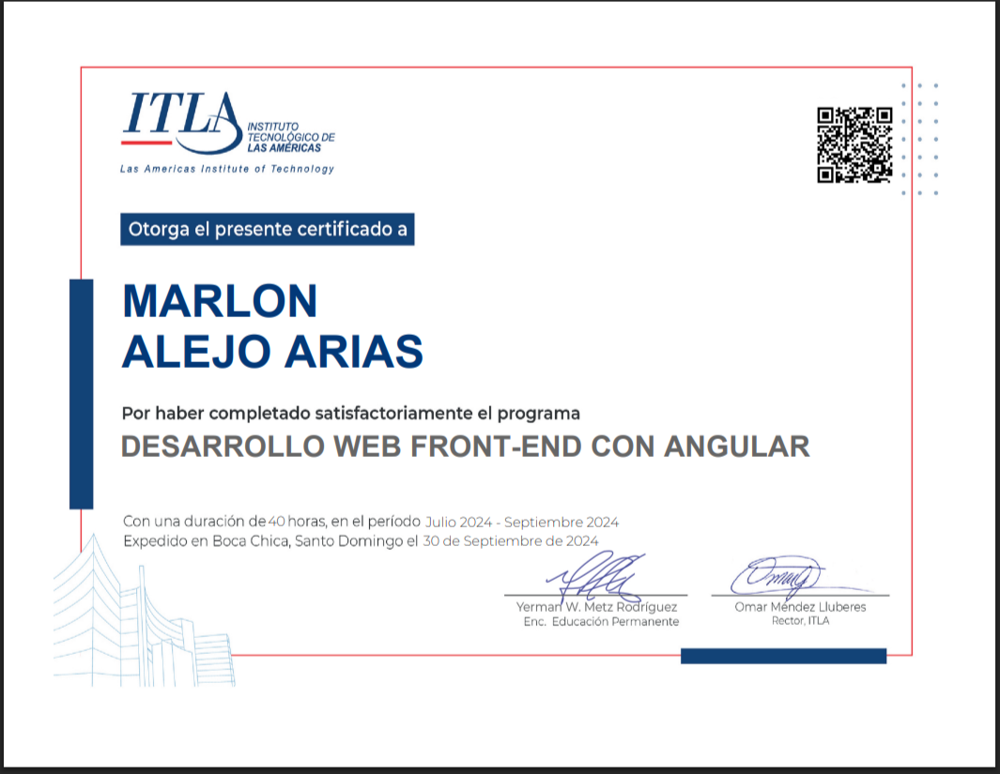

Habilidades
Programador frontend con Angular y experiencia en desarrollo web.
- Angular
- HTML5
- CSS3
- JavaScript / TypeScript
Experiencia / Proyectos
Desarrollador Frontend con Angular
Experiencia desarrollando aplicaciones web modernas con Angular. Creación de componentes reutilizables, gestión de estado y consumo de APIs REST.
ApiMinimalSqlServer
Proyecto de backend y frontend que usa SQL Server para manejar datos.
Certificados
Certificado Curso Desarrollo Web Front-End Con Angular
Certificación profesional en desarrollo frontend con Angular. Dominio de componentes, servicios, routing y consumo de APIs.

Educación
Licenciado en Tecnología de la Información
Graduado de la universidad del caribe unicaribe
Estudios universitarios en Tecnología de la Información con enfoque en desarrollo web y aplicaciones.
Contacto
Email: alejoariasmarlon80@example.com
LinkedIn: marlon-alejo-5a2ba1294
GitHub: brandol08